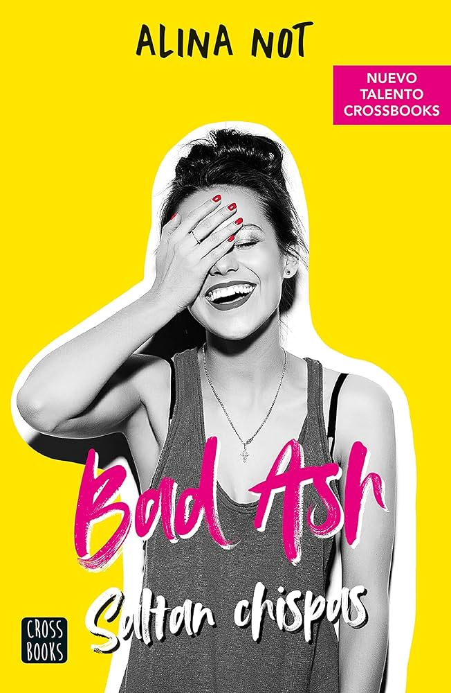

Bad Ash - Alina Not

Argumento
Ashley Bennet es una chica reservada y estudiosa que lleva años
enamorada de Tyler Sparks, el quarterback popular del equipo de fútbol
del instituto.
Aunque Ash sabe que nunca será correspondida, su vida da
un giro cuando Cameron Parker, el mejor amigo de Tyler, le propone un
trato: ayudarla a
conquistar a Tyler. Cameron tiene un plan meticuloso
para que Ash se convierta en la chica ideal para su amigo, con la
esperanza de que este deje a
su actual novia. Sin embargo, a medida que
pasan tiempo juntos, Ash y Cameron desarrollan una conexión inesperada,
lo que complica aún más la
situación y da lugar a un triángulo amoroso
lleno de emociones y dilemas.
Temas
- Triángulo amoroso: La historia explora los sentimientos de Ash por
Tyler y la creciente atracción hacia Cameron, creando una dinámica de
tensión emocional.
- Amistad y lealtad: La relación entre Cameron y Tyler se pone a prueba
debido a las acciones de Cameron, lo que plantea preguntas sobre la
lealtad y la amistad.
- Crecimiento personal: Ash enfrenta desafíos que la obligan a salir de
su zona de confort y a descubrir su verdadero yo.
- Clichés juveniles: La novela juega con elementos típicos de las
historias juveniles, como el chico popular, la chica tímida y el mejor
amigo que se convierte en algo más.